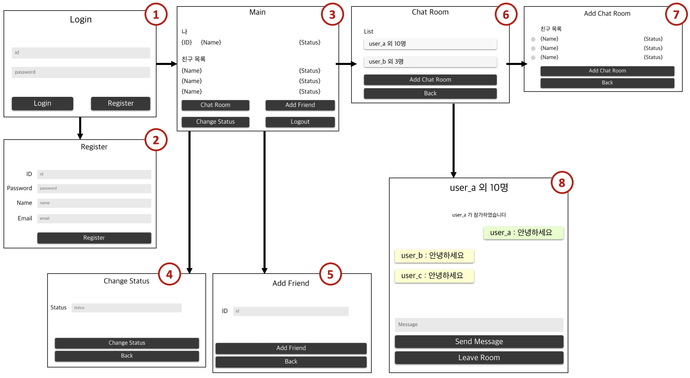
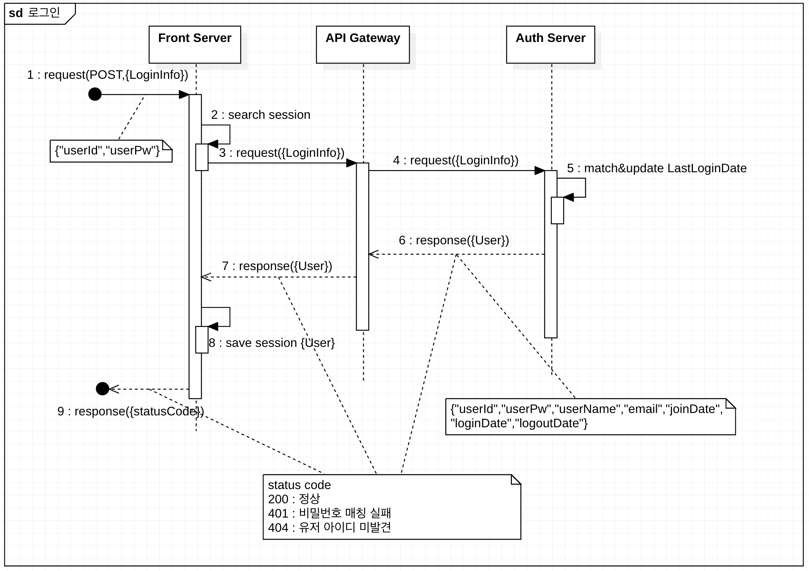
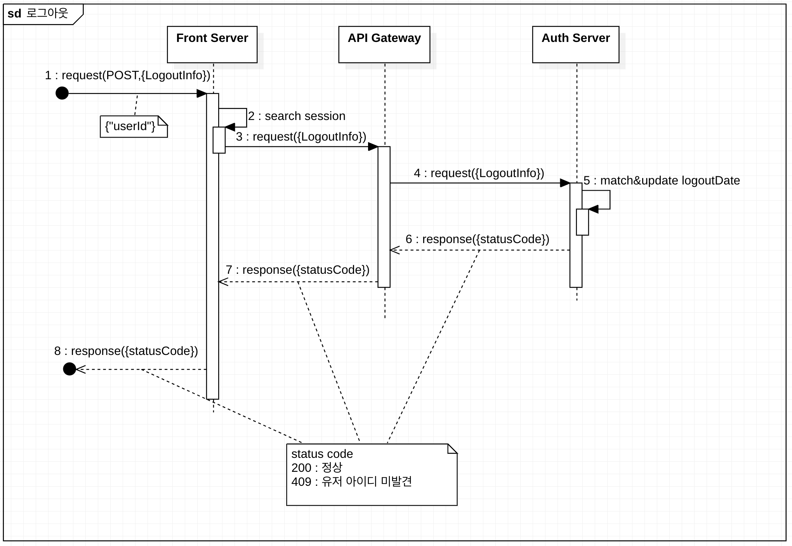
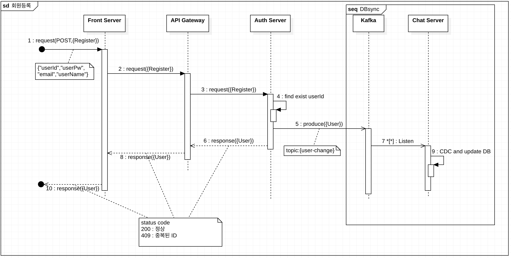
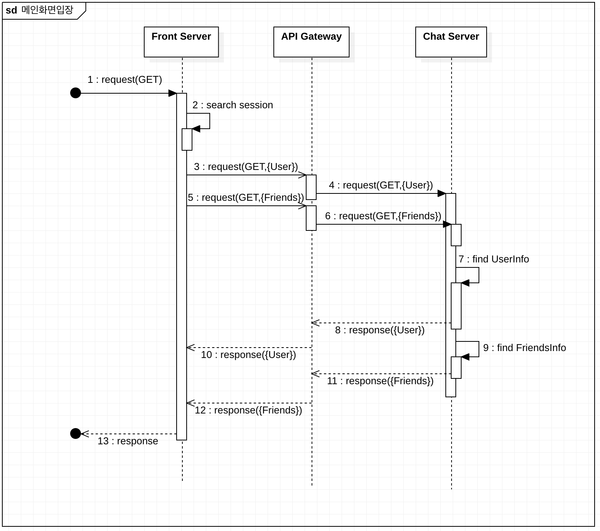
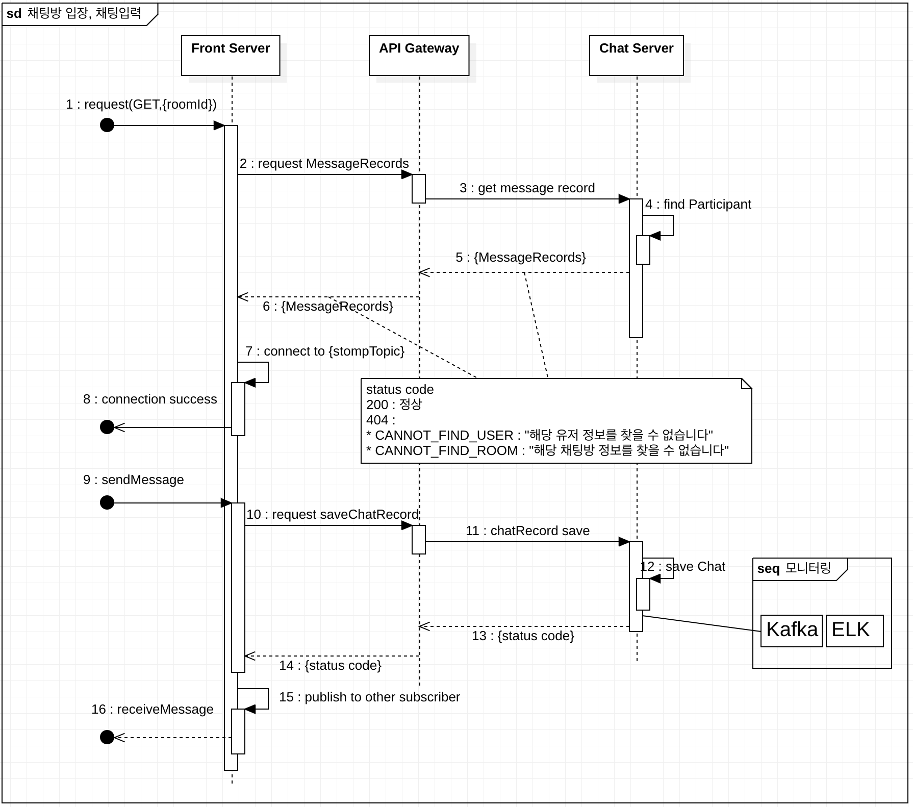

INDEX(프론트 서버 설계)
- 예상 UI
- 시퀀스 다이어그램
- 프론트 HTTP request/response 비동기 or Non-blocking?
예상 UI
앞서 우리는 API Gateway까지 백엔드 전체를 생성했다. 이제 실제 body와 uri를 게이트웨이에 전송하는 프론트 서버를 만들어 볼 것이다.
먼저 Protopie 툴을 통해서 간단히 예상되는 UI를 만들고 시뮬레이션 해보았다.


- 화면목록
- 1 : 로그인
- 2 : 회원등록
- 3 : 메인
- 4 : 상태메세지 변경
- 5 : 친구 추가
- 6 : 채팅방 목록
- 7 : 채팅방 추가
- 8 : 채팅방
시퀀스 다이어그램
간단하게 1~3, 8화면의 플로우를 시퀀스 다이어그램으로 나타내보았다.
3~7 화면의 시퀀스는 반복이라 따로 그리지는 않았다.
로그인(1)

Front Server는클라이언트로부터 유저ID 및 PW가 담긴 POST 요청을 수신한다Front Server는 세션을 확인한다- 세션에 유저 정보가 없다면,
백엔드 게이트웨이(NGINX:http://localhost:8080/auth/login)에 GET 요청을 전송한다백엔드 게이트웨이는 ip_hash로Auth Server중 하나에 전달한다Auth Server는 비밀번호와 매칭된 유저ID를 DB에서 검색 후 매칭시킨다(+loginDate 업데이트)
- 비밀번호 매칭 x : INVALID_PASSWORD(401, “잘못된 비밀번호입니다”)를 반환
- 유저ID 미발견 : CANNOT_FIND_USER(404, “해당 유저 정보를 찾을 수 없습니다”)를 반환
- 매칭된 User정보 및 StatusCode=200 반환
- 매칭된 User정보 및 StatusCode=200 반환
Front Server는 200 도착하면 세션에 유저를 저장한다Front Server는클라이언트에게 반환
로그아웃(1-1)

Front Server는클라이언트로부터 유저ID가 담긴 POST 요청을 수신한다Front Server는 세션을 확인한다
- 세션에 저장된 유저정보가 없음 : CANNOT_FIND_USER_IN_SESSION(NOT_FOUND, “세션에서 해당 유저 정보를 찾을 수 없습니다”)를 반환
Front Server는 http://localhost:8080/auth/logout 에 유저ID와 함께 POST 요청백엔드 게이트웨이는 http://auth-server-1:8082/auth/logout 로 프록시 패스Auth Server은 해당 유저의 logoutDate 업데이트
- 유저ID 미발견 : CANNOT_FIND_USER(NOT_FOUND, “해당 유저 정보를 찾을 수 없습니다”)를 반환
- statusCode만 반환
- statusCode만 반환
- statusCode만 반환
회원등록(2)

Front Server는클라이언트로부터 유저ID/유저PW/유저이름/이메일 이 담긴 POST 요청을 수신한다백엔드 게이트웨이에 전달백엔드 게이트웨이는 http://auth-server-1:8082/auth/user 로 프록시 패스Auth Server은 유저ID가 기존에 존재하는지 확인하고 저장- (Async-1) kafka의
user-change토픽(partition:2,replica:3)에 같은 파티션(key=userId)으로 메세지 전송
- 중복되는 유저 ID 발견 : DUPLICATE_USER_RESOURCE(409, “유저 데이터가 이미 존재합니다”)를 반환
- 등록된 유저정보를 반환
- (Async-2)
Chat Server은 3대의 kafka Broker로부터user-change토픽을 읽음- 등록된 유저정보를 반환
- (Async-3)
Chat Server은 유저의 INSERT/DELETE를 감지하여 자신의 DB에 SYNC- 등록된 유저정보를 반환
메인화면 입장(3)

Front Server는클라이언트로부터 GET 요청을 수신한다Front Server는 세션을 확인한다
- 세션에 저장된 유저정보가 없음 : CANNOT_FIND_USER_IN_SESSION(NOT_FOUND, “세션에서 해당 유저 정보를 찾을 수 없습니다”)를 반환
Front Server는 http://localhost:8080/chat/user 에 userId를 포함한 GET 요청Front Server는 http://localhost:8080/chat/friend 에 userId를 포함한 GET 요청백엔드 게이트웨이는 http://chat-server-1:8084/chat/user 로 프록시 패스백엔드 게이트웨이는 http://chat-server-1:8084/chat/friend 로 프록시 패스Chat Server은 userId와 매칭되는 유저 레코드 확인- 유저 레코드 반환
Chat Server은 userId와 매칭되는 친구 레코드 확인- 유저 레코드 반환
- 친구 레코드 반환
- 친구 레코드 반환
- View 반환
채팅방 입장 및 채팅입력(8)

Front Server는클라이언트로부터 roomId가 포함된 GET 요청을 수신한다Front Server는 세션 유저정보 로드 후, http://localhost:8080/chat/chats 로 userId/roomId가 포함된 이전 채팅기록 조회를 요청한다
- 세션에 저장된 유저정보가 없음 : CANNOT_FIND_USER_IN_SESSION(NOT_FOUND, “세션에서 해당 유저 정보를 찾을 수 없습니다”)를 반환
백엔드 게이트웨이는 http://chat-server-1:8084/chat/chats 로 프록시 패스Chat Server은 실제 유저로직 수행
- 유저가 해당 채팅방에 참여하지 않음 : INVALID_PARTICIPANT(400, “해당 채팅방에 참여하는 유저가 아닙니다”)를 반환
- 유저가 없음 : CANNOT_FIND_USER(NOT_FOUND, “해당 유저 정보를 찾을 수 없습니다”)를 반환
- 채팅방이 없음 : CANNOT_FIND_ROOM(NOT_FOUND, “해당 채팅방 정보를 찾을 수 없습니다”) 반환
- 이전 채팅기록 반환
- 이전 채팅기록 반환
- STOMP 토픽(sub/chat/{roomId})에 연결
- 연결성공 반환
Front Server는클라이언트로부터 roomId/writer/writerId/message 가 포함된 POST 요청을 수신한다Front Server는 http://localhost:8080/chat/chat 으로 POST 전송백엔드 게이트웨이는 http://chat-server-1:8084/chat/chat 로 프록시 패스Chat Server는 채팅저장 + Kafka의log-add-chat토픽에 메세지 전달(이 후 ELK로 모니터링)- status code를 반환
- status code를 반환
Front Server는 정상코드 반환 시, STOMP 토픽(sub/chat/{roomId})에 브로드캐스트- STOMP 토픽을 구독하는
클라이언트들은 메세지 수신
프론트 HTTP request/response 비동기 or Non-blocking?
위와 같이 플로우를 미리 생성해놓으면 중간에 빠질 우려가 있는 에러코드 및 기능들을 한눈에 볼 수 있다.
이제 우리가 고려할 것은 프론트에서 API Gateway 로 요청 송신/수신하는 방법이다. 우리는 해당 송/수신에 WebClient를 사용할 것이다. WebClient는 Spring-WebFlux 라이브러리에서 지원하는 비동기-Non blocking 클라이언트이다. 물론 sync 및 blocking 은 기본지원된다. 따라서 어떤 기능을 sync/Async, blocking/non-blocking 처리할 것인지 정하면 된다.
| 기능 | 송신/수신방법 |
|---|---|
| 로그인 전송 | sync + blocking |
| 로그아웃 전송 | Async + non-blocking (response까지 대기할 필요가 없기 때문) |
| 유저 추가 | Async + non-blocking (마찬가지로 response 대기 미필요) |
| 유저 상태메세지 업데이트 | sync + blocking |
| 메인화면 수신 | sync + blocking |
| 친구 수신 | sync + blocking |
| 친구 추가 | sync + blocking |
| 채팅방 추가 | sync + blocking |
| 채팅방 리스트 수신 | sync + blocking |
| 이전 채팅 수신 | sync + blocking(카카오 같은 경우에는 local에 미리 저장하는듯 하다) |
| 채팅 입력 | Async + non-blocking(서버에 저장되기까지 임시 개인화면에 송출하고, 에러 시 fault 화면 표시) |